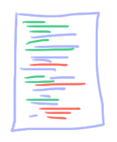

Introdução
Então você está trabalhadno em um dos exercicios do CS50, por exemplo... Você começa com os arquivos que te deram do problema

Você Altera um Pouco

Altera um pouco Mais
Mas espere! Em algum lugar dessa ultima versão você cometeu um erro! Ah não ! Agora tem tantas mundanças Qual esta causando o problema
Já pensou se tivesse algum programa que mostrasse como os arquivos foram modificados? Um programa que lembre de TODAS AS VERSÕES do seu arquivo, exemplo:

E poderia destacar as diferenças: